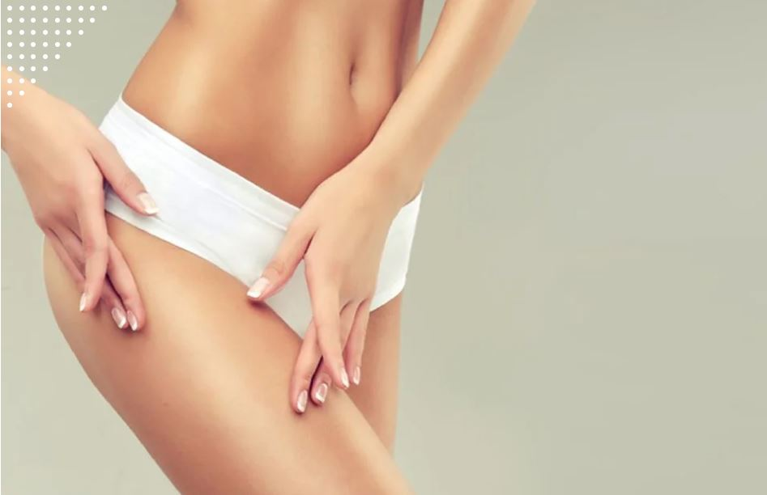

¿Se puede hacer depilación láser con varices?
Aunque existe un tratamiento de las varices con láser, nada tiene que ver con el de depilación. La depilación por láser no debe aplicarse sobre lunares, por ejemplo, aunque basta con esquivar el lunar. Depilación láser y varices también parecen poco compatibles porque el tono de una variz podría atraer la...